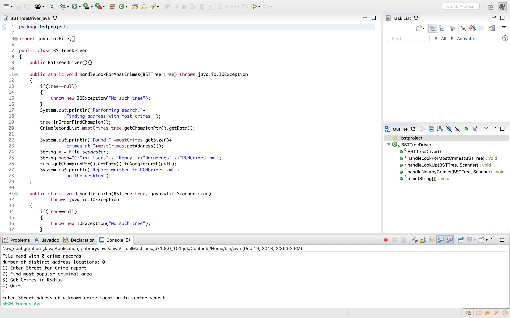

This script procedurally generated KML(Keyhole Markup Language), which is interpreted by Google Earth to form pins on locations of crimes. It is able to determine crimes by street, radius, and find the highest given density of crimes in a set.